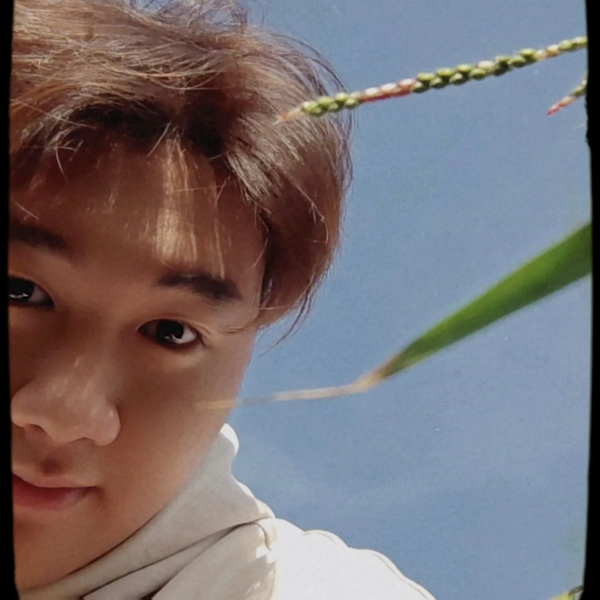

Nguyễn Hoàng Xuân Nam
He/him
👋 Hi there, strangers, I'm Bùi Thế Anh!
🎓 About Me
I'm a second-year student majoring in Information Technology, with a
specialization in Software Engineering. Currently, I am studying and
working in Vietnam. 💻
-
🔭 I’m passionate about programming and technology.
-
🌱 I love being in nature, surrounded by the blue sky, white clouds,
and yellow sunshine - what a wonderful day!
-
💡 I enjoy diving deep into the technology and learning how things
work under the hood.
-
🚀 My goal is to become a professional developer, capable of
building useful software products that can help people.
📚 Interests
-
I love learning about various fields, including natural sciences and
exploring the world around me.
-
I am always curious and strive to make decisions based on evidence.
-
Outside of coding, I enjoy discovering new things and find out how
things work.